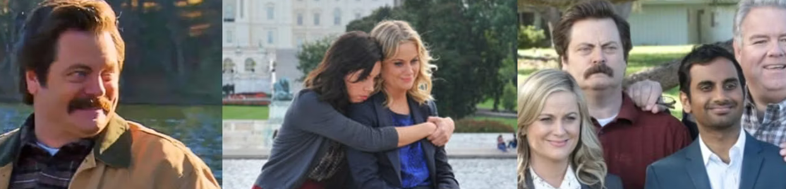
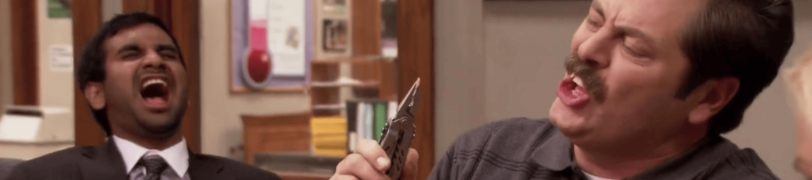

Themes in Parks And Recreation
We're delving into the core themes seen throughout the seven seasons of the hit mockumentary comedy series Parks and Recreation.
Political Commentary
While Parks and Rec has never been assertively political and has generally avoided real-world, hot-button issues, there is still political commentary in its own way. Although deemed liberal, the show gives an unbiased look at several differing viewpoints on the role of government. For example, Ron Swanson identifies as a libertarian and believes the government to be unnecessary in general. Leslie Knope on the other hand believes fully in the power of the government and shows some idolization of more liberal-leaning political figures such as Joe Biden and Hillary Clinton.
Friendship
Throughout the show, there are numerous instances of the power of friendship benefitting the characters. Friendship was showed to transcend even the toughest hurdles time and time again throughout the series. From Leslie and Ron's deep friendship to the friendship of Tom and Donna, this theme is present throughout every episode of the series. The jokes that are made within and about the various friendships show the caring and lovable natures of the characters and often poke fun at the cheesiness of many of the key friendship moments.
Ridiculousness
One of the most common themes among the jokes and some of the plotlines is that of ridiculousness. These instances tend to have no presence in furthering character development or serious plot points, but rather serve as pure comic relief.